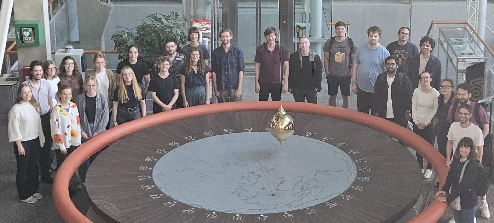

6. Weekend Seminar (Nijmegen)
This was an international edition conducted entirely in English. The workshop was aimed at undergraduate and graduate students of philosophy or physics. Participants were introduced to the theme of Fundamentality and Emergence in lectures and discussion groups. The workshop was hosted by Klaas Landsman's new Radboud Centre for Natural Philosophy.
Vortragende
A discussion of what classical entropy means through its history, physics, and mathematics — from Carnot (1824) to Kolmogorov (1965), via Boltzmann, Shannon, and Einstein.
The debate between quantum fundamentalism and wavefunction fundamentalism, exploring what lies at the heart of such debates — different metaphysical views on the connection between fundamental ontology, dynamics, kinematics, and the mathematical language of physics.
Many approaches to quantum gravity suggest that spacetime is emergent. This talk explores what this could mean, discussing fundamentality in physics and the ideas of inter-theory reduction and consistency.
Programm
| Fr 17:00–18:30 | Introduction: Niels Linnemann & Kian Salimkhani — What is Philosophy of Physics? |
| Fr 18:45–20:00 | Klaas Landsman: What is entropy? |
| Sa 10:00–11:15 | Vera Matarese: At the heart of debates on physical fundamental ontology |
| Sa 11:45–13:00 | Discussion groups A/B/C |
| Sa 14:30–16:00 | Participant talks |
| Sa 16:30–17:45 | Manus Visser: Horizon thermodynamics and emergent gravity |
| So 10:00–11:15 | Karen Crowther: Spacetime Emergence |
| So 11:45–13:00 | Discussion groups A/B/C |
| So 16:30–17:45 | Patricia Palacios: Emergence, reduction and critical phase transitions |


Organisatorisches
Ort: Radboud University Nijmegen
Datum: 6.–8. September 2024
Organisation: Maren Bräutigam (Cologne), Niels Linnemann (Geneva), Kian Salimkhani (Nijmegen), Annica Vieser (Geneva), Karla Weingarten (Munich)
Unterstützt von: Radboud Centre for Natural Philosophy, German Society for Philosophy of Science (GWP), German Physical Society (DPG)
Kontakt: seminar@philosophiederphysik.de